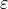

Welcome to the LBweights documentation!¶
Lattice-Boltzmann-weights¶
“LBweights.py” is a Python script that calculates the weights of the (user-supplied) shells of a Lattice Boltzmann model on a simple cubic lattice, based upon numerically solving the Maxwell-Boltzmann constraint (MBC) equations. The script supports arbitrary spacial dimensions and arbitrary tensor ranks up to which the MBCs must hold. The script requires a Python installation (version 3.5 or 2.7) as well as NumPy. It assumes that the speed of sound is a free parameter and hence needs more shells than a model whose speed of sound takes on a definite value that is required for consistency. The output is typically given in the form: weights as a function of sound speed. There are cases where the supplied set of velocities does not admit any solution; in this case the script aborts. There are also cases where it admits infinitely many solutions; in this case an additional script “Continue.py” is used, which builds upon data that the main script stores on file.
In case of a unique solution, the script also calculates the interval(s) of sound speed for which all the weights are positive. At the borders of these intervals, at least one of the weights is zero, such that the corresponding shell may be discarded and one obtains a “reduced model”. In this way, the script is able to reproduce well-known models like D2Q9, D3Q19, D3Q15, etc., but can also easily find higher-order models with significantly more speeds.
For Continue.py, the user has to supply a well-defined value of the sound speed (or an interval plus step size for scanning several values). Moreover, it requires the specification of a shell (or of a set of shells) whose weight (or sum of weights) is to be minimized. Continue.py then finds an optimal solution to the thus-specified linear programming problem. Continue.py therefore requires the package cvxpy, see http://www.cvxpy.org/ .
A significant part of the code is not in the main scripts but rather in a collection of functions in “Functions.py”, which must be available to “LBweights.py” and “Continue.py”.
Tedious tasks like the construction of velocity shells from the velocity modulus are done by the script.
Apart from being useful for researchers and practitioners, the script may perhaps also be used in a classroom setting.
A detailed description of the underlying mathematical theory, together with illustrative examples, is given in the paper “Semi-automatic construction of Lattice Boltzmann models” by Dominic Spiller and Burkhard Duenweg, see http://arxiv.org/abs/2004.03509 (original at Physical Review E, https://journals.aps.org/pre/abstract/10.1103/PhysRevE.101.043310 / open access).
Installation¶
$ git clone https://github.com/BDuenweg/Lattice-Boltzmann-weights.git
$ virtualenv venv
$ source venv/bin/activate
$ cd Lattice-Boltzmann-weights
$ pip install -r requirements.txt
LBweights.py¶
Calculation of the weights of an LB model. You can either supply the input data interactively or by the following command line arguments:
Usage¶
LBweights.py [-h] [-d D] [-m M] [-c C [C ...]] [-s S]
[-y] [--test] [--quiet] [--write-latex]
optional arguments:
-h, --help show this help message and exit
-d D spacial dimension of the lattice
-m M Maximum tensor rank
-c C [C ...] Space separated list of the radii c_i^2 of
the desired velocity shells
-s S Random number generator seed
-y Answer all prompts with yes (may overwrite
file data.npz)
--test Test, whether a set of weights that can be
written as a linear parametric equation
w = w_0 + lambda_1 w_1 + lambda_2 w_2
solves the equation A.w == b for given
speed of sound.
Weights and speed of sound are entered
interactively by the user.
--quiet Turn off most of the output
--write-latex Write unique solution to the file
"latex_tables.dat" in form of a latex
table. This will append to any existing
file.
Calculate LB model vectors and weights for a simple cubic lattice of arbitrary dimension
The method is described in D. Spiller’s and B. Duenweg’s paper “Semi-automatic construction of Lattice Boltzmann models” Therefore explanations in the code are not very detailed
- Exit codes:
0: System has unique solution
1: System has no solution
2: System is underdetermined and requires further examination
3: System has unique solution but there is no physically valid range of existence
127: General error
- LBweights.Analysis(SpacialDimension, MaxTensorRank, ListOfTensorDimensions, GrandTotalList, Arguments)[source]¶
Performs the analysis for a given set of parameters
- Parameters
SpacialDimension (int) – Spacial dimension
MaxTensorRank (int) – Maximum tensor rank

ListOfTensorDimensions (list) – List of the dimensions of tensor space for tensors of rank .
GrandTotalList (list) – List of lists. The
 -th sublist
contains all velocity vectors of shell .
-th sublist
contains all velocity vectors of shell .Arguments (dict) – Dictionary of arguments as returned by function ParseArguments()
- Returns
- Return codes:
0: System has unique solution
1: System has no solution
2: System is underdetermined and requires further examination
3: System has unique solution but there is no physically valid range of existence
127: General error
- Return type
int
- LBweights.GetInputData(Arguments=None, ListOfThrowawayStrings=None)[source]¶
Parse command line arguments. You can optionally give a list with the subshells that you want to discard.
- Parameters
Arguments (dict) – Dictionary of command line arguments. This is useful, if the function is used in an automated script that does not rely on user input.
ListOfThrowawayStrings (list) – List of indices of the subshells to be discarded. This is useful, if the function is used in an automated script that does not rely on user input.
- Returns
Tuple
(SpacialDimension, MaxTensorRank, ListOfTensorDimensions, GrandTotalList, Arguments)- Return type
tuple
Continue.py¶
Find optimal weights for an underdetermined problem. This requires the file
data.npz to be present in the directory that can be written by
LBweights.py if an underdetermined problem is encountered.
You can either supply the input data interactively or by the following command
line arguments:
Usage¶
Continue.py [-h] [-c C [C ...]] [-m M [M ...]]
optional arguments:
-h, --help show this help message and exit
-c C [C ...] Range/value of c_s^2 to consider, either in
the form <min> <max> <incr> or a single
value.
-m M [M ...] List of indices of the weights that are to
be minimized. You can use -1 to refer to the
last shell etc.
Contains routines to treat the case of infinitely many solutions.
- Exit codes:
0: No optimal solution found
1: Optimal solution found
127: General error
- Continue.ParseArguments()[source]¶
Function to parse command line options.
- Returns
Dictionary of command line options
- Return type
dict
- Continue.Solve(V, ReducedRhs, NumberOfRows, ShellSizes, CsSquared, MinimizeWeights)[source]¶
Solve the minimization problem via convex optimization. See: https://www.cvxpy.org/
- Parameters
V (numpy.ndarray) – Orthogonal matrix that results from the singular value decomposition A=U.S.V
ReducedRhs (numpy.ndarray) – Pruned matrix that has the inverse singular values on the diagonal.
NumberOfRows (int) – Number of rows of A
ShellSizes (list) – List of shell sizes (int) NOT including zero shell
CsSquared (float) – Speed of sound squared
MinimizeWeights (list) – List of indices of the weights that shall be minimized in the procedure
- Returns
- cvxpy problem. Problem.status indicates
whether or not the problem could be solved.
- Return type
cvxpy.problems.problem.Problem
Functions.py¶
Collection of helper functions for LBweights.py and Continue.py
- Functions.LINEWIDTH¶
Line width for console output.
- Type
int
- Functions.QUIET¶
Flag to suppress standard output.
- Functions.AbsSquared(Vector)[source]¶
Return the squared absolute value of numpy array.
- Parameters
Vector (numpy.ndarray) – Vector that is supposed to be squared
- Returns
Return the squared absolute value of Vector
- Functions.AnalyzeTensorDimension(CurrentTensorRank)[source]¶
Recursive generation of lists that specify what types of tensors of rank CurrentTensorRank are compatible with cubic invariance and also fully symmetric under index exchange. For rank 2, these are just multiples of the 2nd rank unit tensor
 . Thus tensor dimension is one.
For rank 4, these are multiples of and multiples of
, . Thus tensor
dimension is two. For rank 6, we get another tensor
, but also all possible products of the lower-rank
deltas.
Hence tensor dimension is three. For each new (even) rank M we get another
delta with M indexes, plus all possible products of the lower-order delta
tensors So, for rank two we get
. Thus tensor dimension is one.
For rank 4, these are multiples of and multiples of
, . Thus tensor
dimension is two. For rank 6, we get another tensor
, but also all possible products of the lower-rank
deltas.
Hence tensor dimension is three. For each new (even) rank M we get another
delta with M indexes, plus all possible products of the lower-order delta
tensors So, for rank two we get [[2]](1d) for rank four[[4], [2,2]](2d) for rank six[[6], [4,2], [2,2,2]](3d) for rank eight[[8], [6,2], [4,4], [4,2,2], [2,2,2,2]](5d) and so on. The routine takes care of that “and so on”. This is most easily done in a recursive fashion.- Parameters
CurrentTensorRank (int) – Tensor rank
- Returns
Dimension of tensor space list: List compatible tensors
- Return type
int
- Functions.CloseEnough(A, W, B, M, RelTol=1e-05)[source]¶
Test the condition
- Parameters
A (numpy.ndarray) – Matrix

W (numpy.ndarray) – Vector
B (numpy.ndarray) – Vector
M (numpy.ndarray) – Vector
RelTol (float) – Relative tolerance 
- Returns
True if condition satisfied, False otherwise.
- Return type
bool
- Functions.ComputeSubshell(Velocity, Group)[source]¶
Compute the (sub)shell that is being spanned by Velocity wrt. Group.
- Parameters
Velocity (numpy.ndarray) – Velocity vector
Group (list) – List of transformation matrices that form the cubic group
- Returns
List of velocity vectors that form the velocity shell spanned by Group
- Return type
list
- Functions.Contains(Array, List)[source]¶
Checks whether given numpy array is contained in list. The all() function is defined on numpy arrays and evaluates True if all elements are True.
- Parameters
Array (numpy.ndarray) – numpy array
List (list) – List of numpy arrays
- Returns
True if Array is contained in List, False otherwise.
- Return type
bool
- Functions.ContainsInSublist(Array, ListOfLists)[source]¶
Checks whether given numpy array is contained in a list of lists. The all() function is defined on numpy arrays and evaluates True if all elements are True.
- Parameters
Array (numpy.ndarray) – numpy array
List (list) – List of Lists of numpy arrays
- Returns
True if Array is contained in ListOfLists, False otherwise.
- Return type
bool
- Functions.DoubleFactorial(Number)[source]¶
- Implementation of the double factorial.
- Parameters
Number (int) – Number
- Returns
Number
- Return type
int
- Functions.Echo(String='\n', Linewidth=70)[source]¶
Formatted printing If QUIET is set (i.e. via command line option –quiet) this is suppressed.
- Parameters
String (str) – String to be printed to the console
Linewidth (int) – Maximum line width of console output
- Returns
None
- Functions.EchoError(String='\n', Linewidth=70)[source]¶
Formatted printing Prints irregardless of value of QUIET
- Parameters
String (str) – String to be printed to the console
Linewidth (int) – Maximum line width of console output
- Returns
None
- Functions.EnterWeights(TotalNumberOfShells, i_par=0)[source]¶
Gets vector of weights from user input
- Parameters
TotalNumberOfShells (int) – Number of shells INCLUDING zero-shell
i_par (int) – Solution vector index (parametric solutions are written as )
- Returns
Vector of weights
- Return type
numpy.ndarray
- Functions.EvaluateWeights(W0List, SolutionMatrix, CsSquared)[source]¶
Calculate numerical weights from their polynomial coefficients
- Parameters
W0List (list) – List of polynomial coefficients for zero shell
SolutionMatrix (numpy.ndarray) – Solution matrix

CsSquared (float) – Speed of sound squared
- Returns
List of numerical weights
- Return type
list
- Functions.FillLeftHandSide(SpacialDimension, MaxTensorRank, ListOfTensorDimensions, TotalNumberOfShells, GrandTotalList)[source]¶
Construct the matrix
- Parameters
SpacialDimension (int) – Spacial dimension
MaxTensorRank (int) – Highest tensor rank (M) to consider.
ListOfTensorDimensions (list) – List of the dimensions of tensor space for tensors of rank .
TotalNumberOfShells (int) – Total number of velocity shells
GrandTotalList (list) – List of lists. The
-th sublist
contains all velocity vectors of shell .
- Returns
Matrix
- Return type
numpy.ndarray
- Functions.FillRightHandSide(MaxTensorRank, ListOfTensorDimensions)[source]¶
Construct the matrix
- Parameters
MaxTensorRank (int) – Maximum tensor rank
ListOfTensorDimensions (list) – List of the dimensions of tensor space for tensors of rank .
- Returns
Matrix

- Return type
numpy.ndarray
- Functions.FindRangeOfExistence(W0List, SolutionMatrix)[source]¶
Make use of the function “roots” that needs the coefficients in reverse order, in order to find the roots of the weight polynomials. If inbetween two roots all weights are positive, add them to list CompressedRoots
- Parameters
W0List (list) – List of polynomial coefficients for zero shell
SolutionMatrix (numpy.ndarray) – Solution matrix
- Returns
List CompressedRoots of roots that form valid intervals for the speed of sound.
- Return type
list
- Functions.FindVelocities(SpacialDimension, SquaredVelocity)[source]¶
Scans the cubic lattice for lattice velocity with squared length SquaredVelocity
- Parameters
SpacialDimension (int) – SpacialDimension
SquaredVelocity (int) – Squared length of compatible lattice velocities
- Returns
List of compatible lattice velocity vectors
- Return type
list
- Functions.Frexp10(Float)[source]¶
Returns exponent and mantissa in base 10
- Parameters
Float (float) – Original number
- Returns
(Mantissa, Exponent)- Return type
tuple
- Functions.GetGroup(SpacialDimension)[source]¶
Compute the cubic group. Each transformation matrix in the group is made up of 2d unit vectors of type
 .
We will identify a vector with i-th component 1 and 0 elsewhere by the
number
.
We will identify a vector with i-th component 1 and 0 elsewhere by the
number  . A vector with -th component -1 and 0 elsewhere
is identified by the number .
The cubic group then consists of all orthogonal matrices, with columns
made up of the above unit vectors.
In general there are such transformations.
. A vector with -th component -1 and 0 elsewhere
is identified by the number .
The cubic group then consists of all orthogonal matrices, with columns
made up of the above unit vectors.
In general there are such transformations.- Parameters
SpacialDimension (int) – Spacial dimension
- Returns
A list of all transformation matrices in the cubic group
- Return type
list
- Functions.GetListOfSubshells(Shell, Group)[source]¶
Applies all group transformations to all velocities in shell and returns all distinct shells that result.
- Parameters
Shell (list) – List of velocity vectors
Group (list) – List of transformation matrices that form the cubic group
- Returns
List of distinct velocity shells
- Return type
list
- Functions.IndicatorFunction(W0List, SolutionMatrix, CsSquared)[source]¶
Tests, whether solution yields all positive weights.
- Parameters
W0List (list) – List of polynomial coefficients for zero shell
SolutionMatrix (numpy.ndarray) – Solution matrix
CsSquared (float) – Speed of sound squared
- Returns
True if all weights positive, False otherwise
- Return type
bool
- Functions.LatticeSum(RandomVector, ListOfVelocities, TensorRank)[source]¶
Calculate the sum
for tensor rank
 and shell .
and shell .- Parameters
RandomVector (numpy.ndarray) –
-th random unit vectorListOfVelocities (list) – List of velocity vectors in shell
TensorRank (int) – Tensor rank
- Returns
- Return type
float
- Functions.MakeRandomVector(SpacialDimension)[source]¶
Generate a random vector uniformly distributed on the unit sphere.
- Parameters
SpacialDimension (int) – Spacial dimension d
- Returns
Vector of length one with random orientation in d-dimensional space.
- Return type
list
- Functions.OutputRangeOfExistence(CompressedRoots)[source]¶
Screen output of the intervals of the speed of sound that yield all positive weights.
- Parameters
CompressedRoots (list) – List of roots that form valid intervals for the speed of sound.
- Returns
Number of valid intervals
- Return type
int
- Functions.ParseArguments()[source]¶
Function to parse command line options.
- Returns
Dictionary of command line options
- Return type
dict
- Functions.RatApprox(x)[source]¶
Calculates numerator and denominator for a floating point number x and returns the output as a string.
- Parameters
x (float) – Number to approximate as fraction.
- Returns
Approximate fraction as string
- Return type
str
- Functions.TestSolution(GrandTotalList, MaxTensorRank, SpacialDimension, ListOfTensorDimensions, Solution=None, RelTol=1e-05)[source]¶
Test validity of the equation for given weights w and speed of sound . A solution is deemed valid, if
The weights can be given as a linear parametric equation
- Parameters
GrandTotalList (list) – List of lists. The
-th sublist
contains all velocity vectors of shell .MaxTensorRank (int) – Maximum tensor rank
SpacialDimension (int) – SpacialDimension
ListOfTensorDimensions (list) – List of the dimensions of tensor space for tensors of rank .
Solution (list) – Solution that is to be tested in the form
[CsSquared, [[w_00, w_01,...], [[w_10, w_11, ...], ...]If None is given, the user is prompted to enter a solution by hand.RelTol (float) – Relative tolerance
- Returns
0 if solution is valid, otherwise 1
- Return type
int
- Functions.ToMatrix(Array)[source]¶
Convert an array of unit vector representations to proper matrix. For example
[0,2,1]will be converted to[[1,0,0], [0,0,1], [0,1,0]].- Parameters
Array (numpy.ndarray) – Array of integers
- Returns
Transformation matrix
- Return type
numpy.ndarray
- Functions.Type(Shell)[source]¶
Method to determine typical velocity vector for Shell.
- Parameters
Shell (list) – List of velocity vectors, e.g.
[[0,1],[1,0]]- Returns
Typical velocity vector, e.g.
(0,1)- Return type
tuple
- Functions.WriteLatexNumber(Value, Outfile, Precision=8, Rational=False)[source]¶
Write Value to
Outfilein a Latex compatible way- Parameters
Value (float) – Value
Outfile – Output file
Precision (int) – Number of digits
Rational (bool) – Approximate numbers by fractions
- Returns
None
- Functions.WriteLatexTables(CompressedRoots, W0List, SolutionMatrix, GrandTotalList, MaxTensorRank, Precision=8, Rational=False, Filename='latex_tables.tex')[source]¶
Write unique solution to a file in form of a latex table. This will append to any existing file.
- Parameters
CompressedRoots (list) – List of roots that form the valid intervals for the speed of sound
W0List (list) – List of polynomial coefficients for zero shell
SolutionMatrix (numpy.ndarray) – Solution matrix
GrandTotalList (list) – List of lists. The
-th sublist
contains all velocity vectors of shell .MaxTensorRank (int) – Maximum tensor rank
Precision (int) – Number of digits
Rational (bool) – Approximate numbers by fractions
- Returns
None